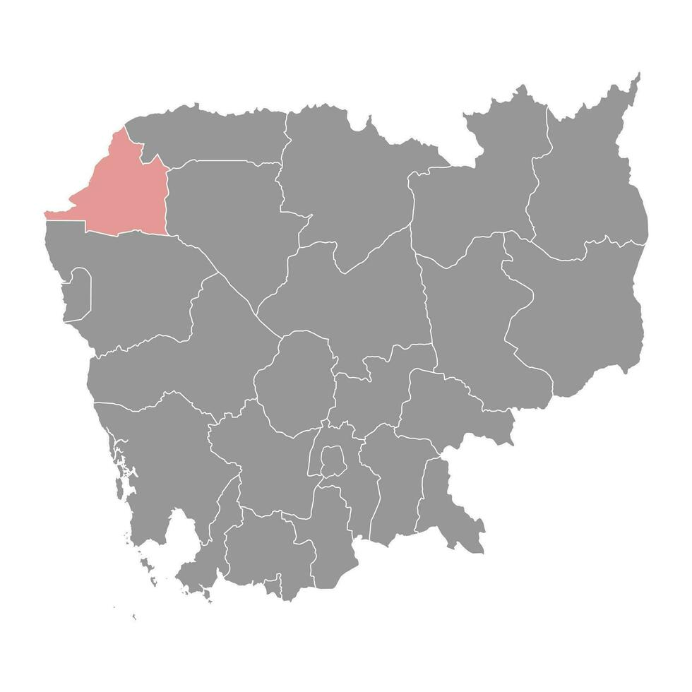

Banteay Meanchey Khmer: បន្ទាយមានជ័យ, Bântéay Méanchoăy is a province of Cambodia located in the far northwest. It borders the provinces of Oddar Meanchey to the north, Siem Reap to the east, Battambang to the south, and shares an international border with Thailand to the west. Its capital and largest city is Serei Saophoan. Banteay Meanchey is the 13th largest province in Cambodia. With a population of 861,883, it ranks as the ninth most populous in the nation. The city of Poipet in the western part of the province is an international border crossing into Thailand. Banteay Meanchey is one of the nine provinces that are part of the Tonlé Sap Biosphere Reserve.
